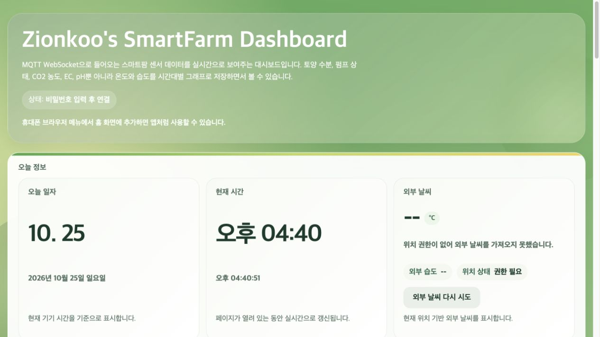
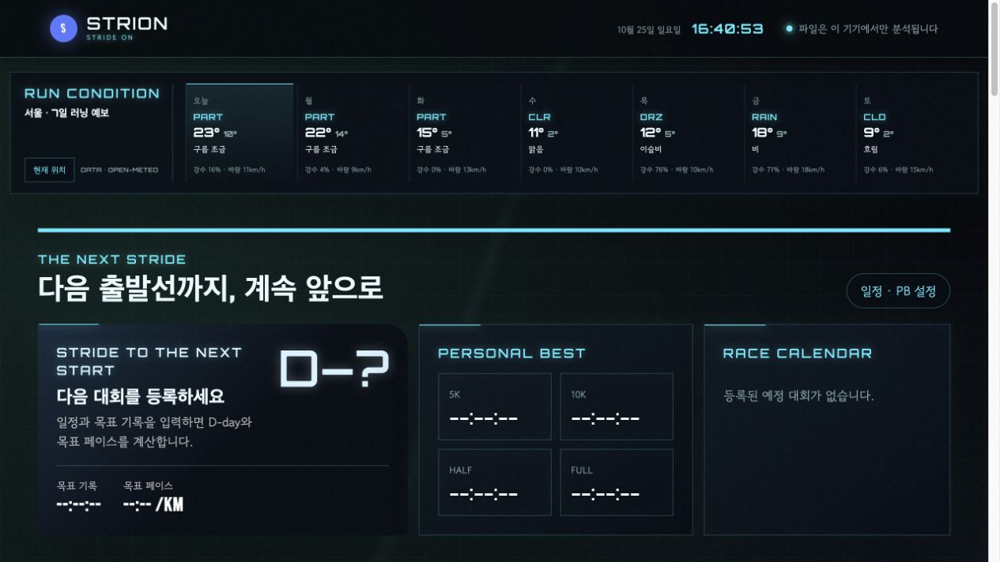

운영의 앞뒤 흐름을 압니다
온라인 MD·상품기획·영업·구매·유통·물류·운영을 경험하며 정보, 일정, 관계자의 흐름을 조율해 왔습니다.
Operations & Digital Service Portfolio
온라인 MD·상품기획·영업·구매·유통·물류·운영에서 쌓은 경험에 IoT와 웹서비스 구축 경험을 더한 구정민의 포트폴리오입니다.
30 Second Brief
다양한 운영 실무에서 얻은 사용자·업무 이해를 바탕으로, 문제를 기능으로 구조화하고 AI와 함께 구현한 뒤 실제 환경에서 검증합니다.
온라인 MD·상품기획·영업·구매·유통·물류·운영을 경험하며 정보, 일정, 관계자의 흐름을 조율해 왔습니다.
6개월 스마트팜 교육과 조별 ICT 역할을 시작으로 Smart Farm과 STRION을 직접 기획·구현·공개했습니다.
실제 장치, 원본 FIT 데이터, 모바일 화면과 비교하며 연결·단위·경계값·사용 흐름을 반복 확인했습니다.
IT 서비스·플랫폼 운영, 서비스 기획·운영 QA, 솔루션 구축·기술지원, 디지털 전환·업무 개선
Career
경력을 관통하는 공통점
상품과 고객 요구를 파악하고, 정보·일정·관계자의 흐름을 조정하며 결과를 확인해 온 경험입니다.
Project 01 · Smart Farm
센서값이 장치와 PC 안에만 머물면 현장 밖에서 상태를 확인하기 어렵습니다. 모바일 접근과 원격 명령 경로가 필요했습니다.
조별 프로젝트 ICT 담당으로 Arduino 센서, Raspberry Pi 5와 Node-RED, HiveMQ, GitHub Pages를 연결해 수집·가공·전달·시각화 흐름을 구성했습니다.
DHT11 실측값과 펌프 명령 수신을 확인했습니다. Telegram으로 시간 단위 상태 요약과 기준 이탈 경고 알림도 수신했습니다.
기준값에 따라 상태색이 바뀌고, 마지막 수신 시각으로 데이터 신선도를 확인합니다.

DHT11 온·습도 수집
센서값 전달
펌프 명령 수신
Node-RED 실행
상시 데이터 중계
Tailscale 원격 접속
데이터 가공·분기
정시 요약 자동화
기준 이탈 판단
MQTT/TLS·WSS
웹 실시간 전달
인증 기반 연결
카드·그래프 시각화
원격 ON/OFF
정시·경고 알림
확장 검증
조별 프로젝트에서는 Raspberry Pi 5와 Node-RED를 중계·자동화 계층으로 사용하고 Tailscale로 원격 관리 경로를 구성했습니다. 이후 Arduino UNO R4 WiFi가 HiveMQ Cloud에 직접 MQTT/TLS로 연결되는 단순 경로도 별도로 구현해 비교했습니다.
여러 센서값과 장치 상태를 한 화면에 모아 순찰이나 개별 확인 부담을 줄이고, 마지막 수신 시각과 기준값으로 데이터 이상을 빠르게 발견합니다.
장치 데이터 수집, 메시지 전달, 웹 시각화, 원격 명령과 알림을 하나의 운영 흐름으로 연결하는 모니터링·제어 인터페이스 역할을 합니다.
온실뿐 아니라 창고 온습도, 냉장 설비, 생산 장비, 재고 상태처럼 기준 이탈을 빠르게 알아야 하는 업무에 적용해 점검과 대응 이력을 체계화할 수 있습니다.
Project 01 · Troubleshooting
Project 01 · Working With AI
스마트팜 전문가 양성과정 조별 프로젝트에서 ICT 담당을 맡아 Arduino, Raspberry Pi 5, Node-RED와 MQTT 기반 생육데이터 대시보드를 구성하고, 장치 연결부터 실제 데이터 검증까지 직접 수행했습니다.
사용 상황과 필요한 결과를 문장으로 정리
브로커·장치·웹 역할과 데이터 흐름 선택
코드 초안, 오류 원인 후보와 개선안 확보
배선·인증·포트·로그·UI를 단계별 확인
모바일 사용성과 예외 상황을 반영
조별 ICT 역할 수행, 문제·기능 정의, Raspberry Pi 5·Node-RED 흐름과 Tailscale 원격 접속 구성, HiveMQ·GitHub Pages 설정, Arduino·센서·릴레이 연결, 로그·모바일 사용성 확인
HTML·JavaScript·Arduino 코드 초안, 에러 메시지 해석, 원인 후보 비교, UI 수정안 탐색과 문서 구조화
Project 02 · Strion
Garmin 원본 FIT 파일을 업로드하거나 Garmin Connect 기록을 동기화하면 브라우저 안에서 기록을 분석하고 다음 훈련과 레이스 계획까지 연결합니다.
원본 러닝 데이터는 항목이 많고 서로 흩어져 있으며, 활동을 볼 때마다 Garmin에서 FIT 파일을 내려받아 직접 업로드해야 하는 과정도 불편했습니다.
러너 관점에서 정보 우선순위를 정하고 FIT 분석, Garmin 동기화, 훈련 해석, PB·대회 일정, 목표 페이스와 레이스 전략을 하나의 사용 흐름으로 설계했습니다. 개인 API 키는 공개 화면에 넣지 않고 Cloudflare Worker를 연결 계층으로 사용했습니다.
Garmin 실사용 FIT 파일과 원본 화면을 대조해 파싱 결과·단위·심박 존 경계를 확인하고, 모바일에서 동기화·저장·재열람·카드 탐색이 자연스럽도록 반복 수정했습니다.
브랜드 의미
STRION은 STRIDE + ON의 합성어입니다. 한 걸음의 데이터를 이해하고 다음 걸음을 이어간다는 의미를 담았습니다.

매번 FIT 파일을 내려받아 업로드하는 불편을 줄이기 위해 Garmin Connect 기록을 직접 가져오도록 확장했습니다. 거리·페이스·심박·고도와 러닝 다이나믹스를 분석하고, 이전 기록은 날짜만 선택해 다시 열 수 있습니다.
FIT에 저장된 Garmin 개인 심박 Zone 1–5를 우선 적용하고, 데이터가 없을 때만 입력한 최대 심박을 사용합니다. Jack Daniels 관점의 VDOT·훈련 참고 페이스와 운동 요약도 제공합니다.
목표 기록으로 이븐·네거티브·포지티브 전략별 구간 페이스와 누적 시간을 계산하고 CSV로 내려받을 수 있습니다.
PB, 대회 D-day와 대회명을 관리하며 일정은 iPhone·Android에서 사용할 수 있는 캘린더 파일로 내보냅니다.
복잡한 FIT 기록을 시각화하고 목표 페이스와 훈련 참고값으로 연결해, 사용자가 기록을 읽는 데서 끝나지 않고 다음 행동을 결정하도록 돕습니다.
파일 업로드부터 분석, 일정·PB 관리, 레이스 전략까지 흩어진 기능을 한 흐름으로 묶는 셀프서비스 분석 도구이자 개인 러닝 운영 화면입니다.
헬스케어·피트니스·교육 서비스에서 사용자 데이터를 요약하고 맞춤 목표, 리포트, 리텐션 기능을 제공하는 구조로 활용할 수 있습니다.
Project Verification
화면을 만드는 데서 끝내지 않고 실제 장치, 원본 데이터, 모바일 환경과 비교하며 핵심 사용 흐름을 검증했습니다.
Transferable Capabilities
업무의 앞뒤 단계와 관계자를 파악하고, 정보·일정·상태를 한눈에 확인할 수 있는 흐름으로 정리합니다.
경력 근거 보기 →사용자의 불편과 원하는 결과를 구체적인 화면, 입력 방식, 알림, 예외처리와 우선순위로 전환합니다.
STRION 근거 보기 →연결·인증·포트·데이터 형식을 구분하고 로그와 실제 결과를 대조해 원인을 한 단계씩 확인합니다.
해결 과정 보기 →완성 여부를 추측하지 않고 실제 장치·원본 데이터·모바일 환경에서 확인해 사용 흐름을 계속 다듬습니다.
검증 항목 보기 →Contact
관심을 교육과 학습으로 실천하고 AI와 함께 구현하며, 업무와 사용자의 문제를 작동하는 결과로 연결하겠습니다.